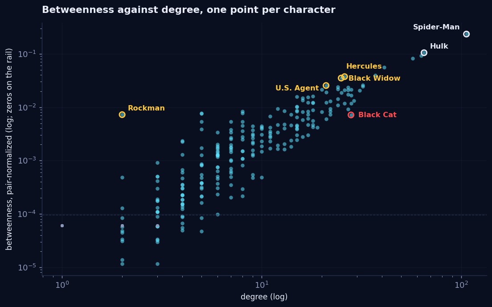
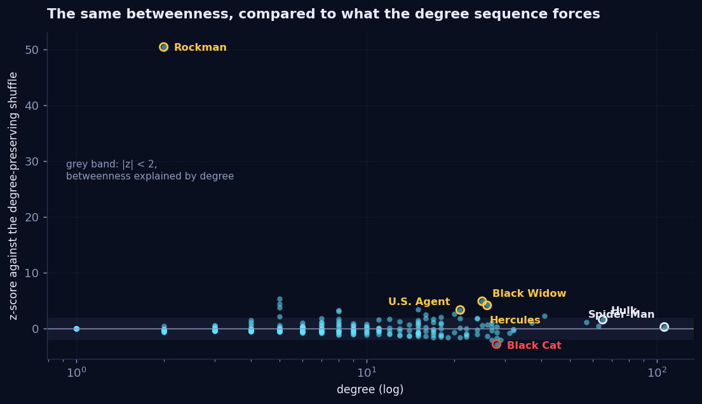

The network shrugged.
This week the course handed us four definitions of importance: how many know you, how fast you reach everyone, how often you are the bridge, and whether the important know you. On the Marvel network all four crown Spider-Man, all four rank close to plain degree, and the whole game is in where they disagree. Then we applied last week's lesson to this week's measures and asked, for every impressive-looking centrality: compared to what? Spider-Man's famous betweenness did not survive the question. Black Widow's did. And when we shot the network eight times to see what falls apart, it barely noticed — hence the title.
- Distances are tiny and BFS is the machine. Mean distance 2.67, diameter 6, and Spider-Man is the literal centre of the universe: nobody in the core is more than 3 steps from him. Keep the arrows, though, and only 69% of ordered pairs can reach each other at all.
- The four centralities mostly agree (rank correlation with degree 0.85 to 0.91), so a top-ten list is not a finding. The disagreements are: PageRank lifts Black Cat and Mayday Parker into the top ten on modest fame, because Spider-Man's nine outgoing links are the biggest vote in the network.
- Compared to what? Spider-Man's betweenness of 0.235 is exactly what any 106-link node would have (z = 0.3). The real brokers are Black Widow (z = 4.9), Hercules (4.2), U.S. Agent (3.3), and, absurdly, Rockman, two links and z = 50. Black Cat has a third of the betweenness her 28 links predict: Spider-Man is a shortcut around her.
- Cliques top out at eight, and the largest clique is not unique: there are six 8-cliques, every one of them the same six X-Men plus two guests.
- The network is hard to shatter. Eight optimal-greedy assassinations shrink the 277-core only to 259, hub-hunting and broker-hunting tie, and beating them takes hits that work together. That is the game above; the best crew we ever found always includes Black Widow.
What we asked
- Who matters, by which definition? Degree, closeness, betweenness, eigenvector centrality and PageRank all answer a different question. Do they answer differently on Marvel, and who benefits?
- Which centralities survive the shuffle? Week 2 taught us that a number means nothing until you know what the degree sequence alone would produce. This week we aimed that tool at betweenness.
- Can you feel it? Betweenness is the least intuitive measure on the list, so we built a game where the difference between "most connected" and "holds the network together" is the difference between winning and losing.
The machine underneath: one BFS per character
Every number in the first half of this post comes out of breadth-first search: stand on a node, everything it links to is at distance 1, everything they link to that you have not seen is at distance 2, repeat. Run it from all 277 characters of the undirected giant component and you have every distance in the network.
| Property | Value | Comment |
|---|---|---|
| Mean distance | 2.67 | Between a random pair of characters |
| Pairs at distance 2 or 3 | 86% | The network in one sentence |
| Diameter | 6 | The farthest two characters are six clicks apart |
| Radius | 3 | The best-placed character sees everyone within 3 |
| The centre | 1 node | Spider-Man, alone. Eccentricity 3. |
Then keep the arrows, and the cosy small world falls apart the way week 1 hinted it would. The largest strongly connected component holds 229 of the 303 characters; only 69% of ordered pairs can reach each other by clicking at all; and Spider-Man, three undirected steps from everyone, can himself reach just 230 characters through his nine outgoing links. Our favourite pair: Box links to Guardian, one step, and the shortest route from Guardian's page back to Box is eight clicks. When the question involves reaching, spreading or flowing, check whether the arrows matter before computing anything.
Four answers to "who matters"
Each measure answers one question well. Degree: how many direct connections? In a directed network it splits in two, and the split is the week-1 story again: the Hulk is mentioned by 64 pages and mentions ten; Betsy Braddock is mentioned by seven and mentions 28. Famous and curious are different jobs. Closeness: how fast can you reach everyone? The inverse mean distance. Spider-Man's is 0.595, meaning 1.68 steps to a random character; the median character sits at 0.381. Betweenness: how often are you the bridge others must cross? The fraction of all shortest paths that pass through you. Eigenvector centrality / PageRank: are you connected to people who are themselves important? Circular on purpose, and the circularity resolves into the leading eigenvector of the adjacency matrix, or, for PageRank, into where a random clicker who sometimes teleports spends eternity.
| # | Degree | Betweenness | PageRank (directed, α = 0.85) |
|---|---|---|---|
| 1 | Spider-Man · 106 | Spider-Man · 0.235 | Spider-Man |
| 2 | Hulk · 65 | Hulk · 0.105 | Hulk |
| 3 | Wolverine · 63 | Wolverine · 0.093 | Wolverine |
| 4 | Doctor Strange · 57 | Doctor Strange · 0.083 | Doctor Strange |
| 5 | Deadpool · 41 | Deadpool · 0.056 | Black Cat |
| 6 | She-Hulk · 37 | She-Hulk · 0.040 | Deadpool |
| 7 | Phoenix Force · 32 | Hercules · 0.037 | Mayday Parker |
| 8 | Scarlet Witch · 32 | Black Widow · 0.035 | Venom |
| 9 | Black Panther · 31 | Phoenix Force · 0.026 | Phoenix Force |
| 10 | Venom · 29 | U.S. Agent · 0.026 | Jean Grey |
The rank correlations with degree are 0.85 (closeness), 0.88 (harmonic and eigenvector) and 0.91 (betweenness), and the degree and betweenness top tens share seven names. So on this network the measures mostly agree, and a bare top-ten list tells you almost nothing you did not know from counting links. The information is in the exceptions, bolded above, and each kind of exception has a mechanism.

Compared to what, centrality edition
Here is the sentence we almost wrote: "Spider-Man is the critical broker of the Marvel universe: 23% of all shortest paths pass through him." Every word is true. Then we did to betweenness what week 2 did to everything else: 200 degree-preserving shuffles, recompute, and ask where the real value lands.
| Character | Degree | Real betweenness | Shuffled | z | Verdict |
|---|---|---|---|---|---|
| Spider-Man | 106 | 0.235 | 0.232 ± 0.010 | +0.3 | Not a finding. Any node with 106 links brokers this much. |
| Black Widow | 25 | 0.035 | 0.016 ± 0.004 | +4.9 | A broker. Twice the betweenness her degree predicts. |
| Hercules | 26 | 0.037 | 0.018 ± 0.005 | +4.2 | A broker. Position, not popularity. |
| U.S. Agent | 21 | 0.026 | 0.012 ± 0.004 | +3.3 | A broker. Betweenness top ten from degree rank ~30. |
| Black Cat | 28 | 0.007 | 0.020 ± 0.005 | −2.8 | Sheltered. A third of what her degree predicts. See below. |

The z-scores invert the fame ordering. Spider-Man, the Hulk and Wolverine sit inside the band, because a hub in any network with this degree sequence carries this many paths; their betweenness is real but it is not information. The characters the shuffle promotes are mid-degree characters whose links happen to be the only connection between regions: Black Widow and U.S. Agent connect otherwise-separate corners of the Avengers sprawl, Hercules bridges his mythological cast into the superhero core. And the single most surprising character in the entire network is Rockman, an Atlas-era leftover with two links and z = 50: one of his two neighbours connects to nothing else through anywhere but him, so every path to that corner squeezes through a degree-2 node. Betweenness can be enormous at degree two. That is the Krackhardt kite from the lecture, alive in real data.
For completeness we also re-ran the week-2 assortativity number with this week's shuffles: r = −0.105 against −0.123 ± 0.011 shuffled. Still not a finding, still what a 106-link hub forces on a 277-node network. Some lessons keep.
Cliques: the strictest possible team
A clique is a set of characters in which every pair is linked, the strictest definition of a group the graph offers. The giant component has 1835 triangles, 893 maximal cliques, 477 distinct 5-cliques, and a clique number of 8: you can find eight characters whose 28 possible page-pairs all link, and you cannot find nine.
So we turned betweenness into a game
Betweenness is the measure of control: remove the broker and traffic reroutes or stops. The obvious way to feel that is to remove people. KINGPIN, linked at the top or right here, gives you a contract of 3, 5 or 8 eliminations on the giant component and one goal: make the biggest surviving cluster as small as possible. Every character who loses their last route to the core is cut off and stops counting. When the hits run out, three rival hitmen run the same contract on the same board, one shooting by degree, one by recomputed betweenness, one at random, and you are scored against all three.
Building the game forced us to learn three things the figures above do not show:
| Single hit | Degree | Cut off beyond the victim |
|---|---|---|
| Spider-Man | 106 | 5 |
| Black Widow | 25 | 3 |
| Doctor Strange | 57 | 2 |
| War Machine | 16 | 1 |
| Turbo | 5 | 1 |
- The network is nearly unbreakable. Only 13 of 277 characters are articulation points, whose removal disconnects anything at all. The best single hit in the universe, Spider-Man, cuts off five characters. Eight optimal-greedy hits take the core from 277 to 259. This robustness is the flip side of week 2's heavy tail: there is almost always a path around you.
- The hub bot and the broker bot tie. Both greedy strategies produce the identical kill list for four hits and the identical core of 259 after eight, because at the top of this network, betweenness is degree, which is the z-table above restated as gameplay.
- Beating them takes combinations. Greedy shooting, by any centrality, sheds leaves one hub at a time. Simulated annealing over hit-sets found crews that do strictly better: core 264 with 3 hits, 259 with 5, 253 with 8, and every record crew contains Black Widow, degree 25, the broker the shuffle found. No single-number ranking discovers her; only asking "what do these hits do together?" does. Her betweenness z-score was the cheap preview of that answer.
Degree answers "who is popular". Betweenness answers "who controls the flow", and only after the shuffle. And "whose removal breaks the network" is a third question, about sets rather than nodes, that no per-node centrality fully answers. The game's scoreboard is the three questions side by side.
What surprised us
- Rockman. We went looking for brokers and the biggest surprise-by-shuffle in the network is a forgotten 1941 character with two links and a z-score of 50. Betweenness genuinely does not care about degree, it cares about doors.
- Black Cat has a third of the betweenness her degree predicts. Standing next to Spider-Man makes you popular and powerless at the same time, and the network can measure the difference.
- The 8-clique is six 8-cliques. The course page names one; enumeration finds six, all built on the same six X-Men. The largest clique is best read as a core with guest seats.
- You cannot shatter this universe. We built an assassination game and the honest headline is that eight perfect hits remove 6.5% of the core. The robustness was the finding; the game works because squeezing out those last few characters is genuinely hard.
- Spider-Man's betweenness is the least interesting number about him. It is enormous and it is exactly what his degree forces. His nine outgoing links, meanwhile, quietly decide fifth place in PageRank. The boring-looking number was the load-bearing one.
Reproduce it
One script for the post, one for the game's engine, and the game's algorithms are tested against networkx rather than trusted.
git clone https://github.com/Oddvar112/Social-Graphs-and-Interactions
cd Social-Graphs-and-Interactions
python scripts/analyse_week3.py # every figure and number in this post (a few minutes)
python scripts/analyse_week3.py --quick # the same with 30 shuffles, for a look
python scripts/test_kingpin_rules.py # runs the game's shipped core.js under node,
# diffs betweenness and both bots against networkx
python -m http.server 8000 # then open http://localhost:8000Every number quoted in this post is written to data/stats_week3.json by
analyse_week3.py. The game's graph engine lives in weeks/week3/game/core.js with no
DOM in it, so the test executes the exact file the browser runs: its Brandes betweenness matches networkx to
10−13, its rival bots shoot the same characters in the same order, and the record hit-lists
achieve exactly the core sizes the game claims.